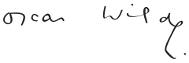

Oscar Wilde o sztuce i życiu
Oscar Wilde (ok. 1882), fot. N. Sarony; na licencji Corbis/Fotochannels
I am a born antinomian.

Oscar Wilde to twórca powszechnie znany, o którym właściwie niewiele wiemy.
Absolwent uniwersytetu w Oksfordzie, wybitnie uzdolniony, wyjątkowo błyskotliwy, dandys, esteta, mistrz
paradoksu, olśniewający poczuciem humoru, ciętym dowcipem i niebanalnym żartem. Lubił sprawiać innym radość,
ale też prowokował, skłaniał do myślenia, odrzucania schematów, stereotypów. Ekstrawagancja w ubiorze,
zachowaniu, wypowiedziach sprawiała, że nie można było być wobec niego obojętnym. Tego chciał, bo uważał,
że gorsze od tego, że o nas mówią, jest to, że o nas nie mówią. Nieustannie poszukiwał nowych
wrażeń, cenił wolność w każdym jej aspekcie i z niezwykłą odwagą o nią walczył. Chciał kreować każdy dzień,
wciąż odkrywając siebie – pragnął tworzyć własne życie, uczynić z niego najwspanialszą sztukę.
Wiem, że wszyscy uważacie, iż jestem samowolny, ale to rezultat nemezys charakteru i przeciwności życia. Byłem problemem nie do rozwiązania – pisał w 1897 roku w liście do More’a Adeya.
Więcej:
 Wydawnictwo: WILDBOOK
Wydawnictwo: WILDBOOKRok wydania: 2010
Oprawa: twarda
Format: 205x145
Liczba stron: 224
Cena: 42 zł
ISBN: 978-83-930701-0-7
Książka jest próbą przybliżenia refleksji Wilde’a o sztuce i życiu, ukazania ich aktualności, głębi, uniwersalnej wartości. W pierwszej części dokonano wyboru i uporządkowano tematycznie jego wypowiedzi o sztuce i życiu (podano je w języku angielskim i polskim tłumaczeniu). Część druga to omówienie problematyki zawartej w tych sądach. Appendix zawiera m.in. szczegółowe kalendarium, informacje dotyczące adaptacji utworów oraz opinie znanych postaci odnoszące się do Wilde’a bądź jego twórczości.
Kontakt: mywildbook@gmail.com